We provide professional structured cabling in Nairobi and across Kenya for businesses, data centers, and homes — ensuring fast, reliable, and scalable connectivity.
Our solutions integrate with enterprise WiFi, fiber optic networks, and IP PBX systems.
🚀 Request Network AssessmentWe design and install high-performance network cabling systems that support modern business operations, ensuring speed, reliability, and scalability.
Our cabling integrates with:
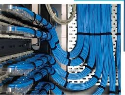
We design and install structured cabling systems that form the backbone of your IT infrastructure.
Supports voice, data, and video across enterprise environments.
Uses Cat6, Cat6A, and fiber standards for high performance.
Ensures clean and organized cable management.
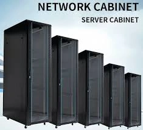
We install and organize professional server rack systems for IT environments.
Supports servers, switches, and networking equipment.
Ensures proper airflow and cooling management.
Improves equipment safety and accessibility.
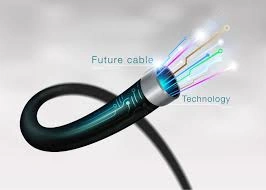
We provide high-speed fiber optic installation services for backbone networks.
Supports long-distance, high-bandwidth data transmission.
Ideal for ISPs, campuses, and enterprise networks.
Includes single-mode and multi-mode fiber solutions.
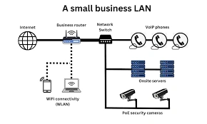
We design and install reliable LAN network infrastructures for businesses.
Ensures seamless communication between all connected devices.
Supports high-speed internal data transfer.
Integrates VoIP, CCTV, and wireless systems.
We install professional cable trunking systems for organized cable management.
Protects cables from damage and wear.
Improves safety in office and industrial environments.
Hides cables for a clean professional finish.
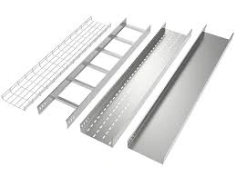
We install durable cable tray systems for structured cable support.
Ideal for large-scale industrial and commercial setups.
Supports heavy cable loads over long distances.
Available in ladder, perforated, and solid trays.
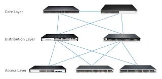
We deploy high-performance core switching systems for enterprise networks.
Handles large volumes of internal traffic with high efficiency.
Ensures seamless communication between departments and systems.
Supports Layer 2 and Layer 3 switching technologies.
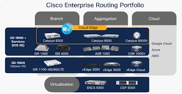
We implement advanced routing systems for enterprise connectivity.
Enables efficient data flow between multiple networks and locations.
Supports static and dynamic routing protocols.
Ensures secure WAN and LAN integration.
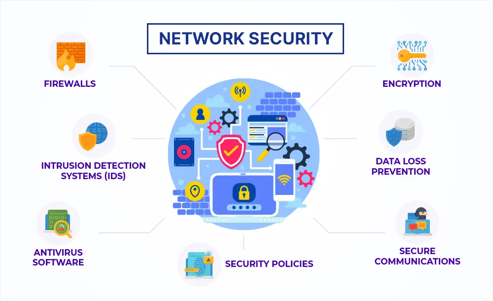
We deploy enterprise-grade network security solutions for LAN environments.
Protects internal systems from unauthorized access and threats.
Includes firewalls, access control, and intrusion prevention.
Secures both wired and wireless network traffic.
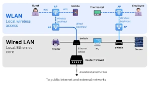
We design and deploy enterprise wireless LAN systems for seamless connectivity.
Provides strong and stable WiFi coverage across large areas.
Supports seamless roaming between access points.
Integrated with wired LAN infrastructure.
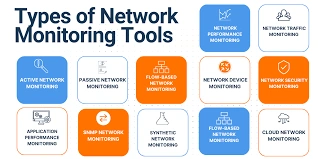
We implement intelligent network monitoring systems for LAN infrastructure.
Provides real-time visibility of network performance.
Detects faults, bottlenecks, and failures instantly.
Ensures proactive maintenance and troubleshooting.
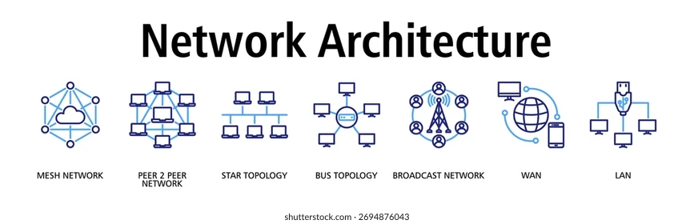
We design complete enterprise LAN architectures tailored to business needs.
Ensures optimal performance, scalability, and reliability.
Includes planning of switches, routers, and cabling layout.
Supports hierarchical network design models.
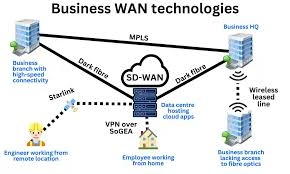
>
We design and deploy reliable Wide Area Network (WAN) solutions for enterprises.
Connects multiple branch offices into a unified network system.
Supports secure and stable long-distance communication.
Integrates seamlessly with existing LAN infrastructure.
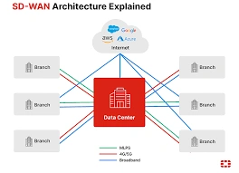
We deploy Software-Defined WAN (SD-WAN) for modern enterprise connectivity.
Intelligently routes traffic across multiple internet links.
Improves application performance and user experience.
Reduces dependency on expensive leased lines.
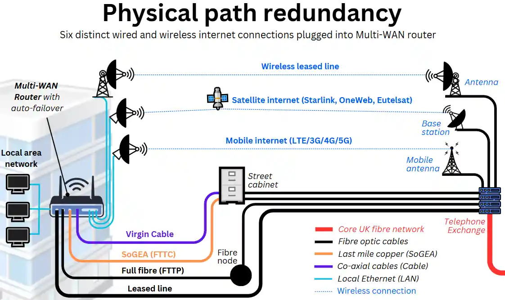
We implement robust internet redundancy systems for uninterrupted connectivity.
Ensures continuous internet access even during primary link failure.
Uses multiple ISPs for failover protection.
Automatically switches to backup connections when needed.
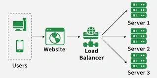
We deploy intelligent load balancing systems for enterprise networks.
Distributes network traffic across multiple connections.
Prevents overload on a single internet link.
Improves speed and responsiveness of applications.
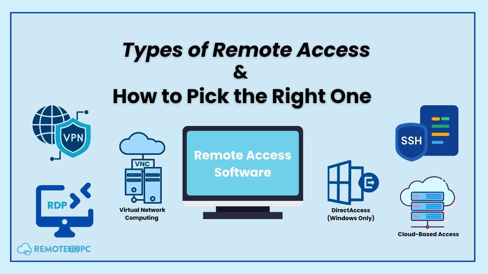
We provide secure VPN solutions for enterprise remote connectivity.
Enables employees to securely access company resources from anywhere.
Encrypts data for safe communication over public networks.
Supports remote offices and mobile workers.
We deliver high-performance structured cabling systems in Kenya designed for speed, reliability, and future scalability. Our expert engineers ensure your network infrastructure supports business growth without downtime.
Build a fast, secure, and scalable network with our expert structured cabling solutions. Perfect for offices, data centers, and enterprise environments.
🚀 Get a Free Network AssessmentEnhance your network performance with our integrated ICT solutions: